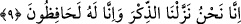

alay eden önceki ümmetlere yapıldığı gibi size de bir an bile mühlet verilmez. Buna
müstahak olmalarına rağmen kader hükmünü yazan kalem onların azabının kıyâmete
ertelenmesi yönünde çalışmıştır. Çünkü hem ilâhî ilim, hem de ilâhî irâde azablarının
artmasına ve nesillerinden bazı mü’min insanlar gelmesine taalluk etmiştir.
Kâşifî Tefsîri’nde şöyle der: “Biz melekleri” ister vahiy ile ister azâb ile inmiş
olsunlar “ancak hak ile indiririz” yâni melek azâb cihetiyle nâzil olduğu vakit onu aslî
sûreti üzere görmek mümkün olur. Semud kavmi, Cebrâil (a.s.)’ı sayha (korkunç ses)
zamanında öylece gördüler. Ya da ölüm vaktinde herkes melekleri öylece görür. “o
zaman onlara mühlet verilmez.” yâni melekleri aslî sûretlerinde gönderdiğimiz zaman
mühlet verilenlerden olmadılar. Yâni hemen azâba dûçar oldular.”
9. Kur an’ı kesinlikle biz indirdik; elbette onu yine biz koruyacağız.
“Kur’an’ı kesinlikle biz indirdik;” Hem kendisini hem de sana indirildiğini inkâr
ettikleri, kendisi yüzünden sana delilik isnadında bulundukları, aslı astarı olmayan bir
şey ve fâili olmayan bir fiil olduğunu îmâ ederek fiili mef’ûle (vahyi kendisine
vahyedilene) isnad ederek mertebesini görmezden geldikleri bu zikri/Kur’ân’ı büyük
şanımız ve yüce cenabımız hasebiyle Biz indirdik.
Kâşifî der ki: “Zikir, şeref mânâsına gelir. Yâni bu kitab okuyanların şerefini gerekli
kılar.” yâni hem dünyâda hem de âhirette. Nitekim Allah Teâlâ: “Aksine Biz, onlara
zikr’i” yâni şan ve şeref sâhibi olmalarını sağlayacak olan Kitab’ı “getirdik” (el-
Mü’minûn, 23/71) buyurmaktadır.
“Elbette onu” her vakitte “yine biz koruyacağız.” Yâni, hakkında ileri geri konuşma,
hak olması konusunda mücâdele etme, onu yalanlama, onunla alay etme, tahrif, tebdil,
ekleme, çıkarma ve benzerlerinden onun şanına yakışmayacak şeylerden onu devamlı
olarak koruyacak olan da Biziz! Önceki kitapları korumayı ise Allah üstlenmemiş,
insanlar korumak istedikleri için onlarda bozulma olmuştur.
et-Tibyân’da şöyle der: “Ya da onu şeytanların vesveselerinden ve karıştırmalarından
koruyan da Biziz!” Yâni, şeytan ona bâtıl bir nesne ilâve edemez, haktan da bir şey
eksiltemez.
Bahru’l-ulûm’da der ki: “Allah’ın onu koruması, alıkoyma yolu ile gerçekleşmiştir.
Yâni insanlar Tevrât ve İncil’i tahrif ettikleri gibi onu tahrif etmeye ve eksiltmeye kâdir
oldukları halde Allah onları bundan alıkoymuştur. Ya da âlimlerin koruması; lafız ve
mânâlarını açıklamak üzere tefsir, kırâat ve diğer ilimlerle ilgili kitaplar yazmaları
sûretiyle âlimler eliyle korumuştur.
Mesnevî’de der ki:
Allah’ın lütufları, Mustafa’ya vaad etmişti ki: